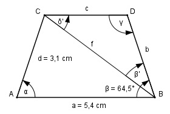

Aufgabe 165 Wie groß ist die Seite c des gleichschenkligen Trapezes?

α = β wegen gleichschenkligem Trapez 360° - 2 * β 360° - 2 * 64,5° γ = -------------- = ------------------ = 115,5° 2 2 Im Dreieck ABC: Fall SWS: Cosinussatz: f2 = a2 + d2 - 2 * a * d * cos α f2 = 5,42 + 3,12 - 2 * 5,4 * 3,1 * cos 64,5° f2 = 5,42 + 3,12 - 2 * 5,4 * 3,1 * 0,4305 = f2 = 24,4 |√ f = 4,9 cm Im Dreieck CBD: b = d = 3,1 cm Fall SSW: Sinussatz: f b ------- = -------- |*sin δ’ sin γ sin δ’ f * sin δ’ --------------- = b |*sin γ sin γ f * sin δ’ = b * sin γ | :f b * sin γ sin δ’ = ----------- = f 3,1 cm * sin 115,5° 3,1 cm * 0,9026 = --------------------- = ----------------- = 4,9 cm 4,9 cm = 0,571 --> δ’ = 34,8° β’ = 180° - γ – δ’ = 180° - 115,5° - 34,8° = 29,7° Fall SWW: c f ------- = ------- |*sin β’ sin β’ sin γ f * sin β’ c = ------------ = sin γ 4,9 cm * sin 29,7° 4,9 cm * 0,4955 = -------------------- = ------------------ = sin 115,5° 0,9026 = 2,7 cm